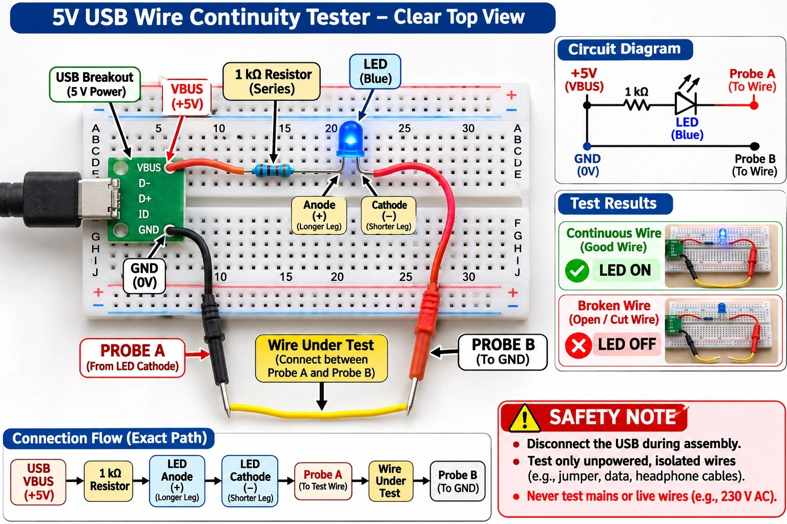

Build a Wire Continuity Tester
How can we find out if a wire is broken?
Electricity needs a complete path to travel. If a wire is broken, electricity cannot pass through it. We can use a small LED light to check whether the wire is connected.
A continuity tester does exactly that. It sends a tiny, safe current through the wire you want to check. If the blue LED lights up, the wire is joined from one end to the other.

Wire joined end to end
The LED lights up. The wire has continuity. That is a PASS.
Wire broken inside
The LED stays off. The path is open. That is a FAIL.
Safety rules. Read them first.
Our tester is low voltage, but electricity needs respect. These rules keep everyone safe.
- Disconnect the USB before changing any connections.
- Use only a 5 V USB power supply.
- Test only separate, unpowered wires.
- Never test wall sockets, 230 V AC, live circuits or powered equipment.
- Never put the probes into USB ports, wall sockets or appliances.
- Ask a teacher or adult to check the circuit before you connect USB power.
- Never let VBUS (+5 V) touch GND directly. That makes a short circuit.
Before you build the real tester, ask a teacher or adult to be with you. The simulator on this page is a computer drawing, so it is safe to play with anytime.
Meet the components
Click each component to discover what it does.
How does it work?
Think of electricity like water in a pipe. If the pipe is joined, water can pass. If the pipe has a gap, water cannot pass.
The circuit diagram
From the project picture. The current starts at +5 V, goes through the resistor and the LED, then waits at Probe A and Probe B for a wire to complete the path back to GND.
Pipe joined: water passes. This is a good wire.
Pipe has a gap: water cannot pass. This is a broken wire.
Follow the electricity
The path is complete. Electricity flows all the way round, so the LED glows.
A complete path
Electricity can flow, so the LED lights.
A good wire
It completes the circuit between Probe A and Probe B.
A broken wire
It makes a gap. Electricity cannot cross it.
LED ON means
Continuity. The path is complete.
LED OFF means
The path is open, or there is a problem in the setup.
Remember
This tester checks only whether a path exists. It does not measure resistance, and it cannot tell if a wire is safe for big currents.
Important words
Build the experiment
Eight small steps, one at a time. Read each step before you touch any parts.
Read the labels
Never guess the USB pin positions. Read the printed labels on your board.
No direct short
Do not connect VBUS directly to GND. That is a short circuit.
Holes vary
Breadboard hole positions are different on every board. Follow the connections below, not hole numbers.
Connection summary
| Start here | Connect to |
|---|---|
| USB VBUS (+5V) | One end of the resistor |
| Other end of resistor | LED longer leg (anode +) |
| LED shorter leg (cathode −) | Probe A |
| Probe B | USB GND (0V) |
| Wire being tested | Between the free metal tips of Probe A and Probe B |
The test lab
Try three tests. Watch the LED and the path of the electricity.
Test 1: Probe check
Test 2: Good wire
Test 3: Broken wire
Controls
Connection status
LED OFF Path openReady to test
The probes are apart, so the path is open and the LED is OFF. Pick a test to begin.
Make a prediction
Scientists guess first, then test. Pick a test, predict the LED, then run it.
1. Pick a test
2. Predict
3. Run the test
Your experiment notebook
Predictions you run above are saved here. Write your own conclusion for each trial. Your notebook stays on this device.
| Trial | What did you test? | My prediction | Actual LED result | My conclusion |
|---|
Your CSV is ready. If a file did not download, copy the text and paste it into a spreadsheet.
Think and answer
If it does not work
Do not worry. Every inventor has to fix things. Open each card to see what to check.
Test your knowledge
Eight questions. You will see right away if your answer is correct.
What have we learned?
Electricity needs a complete path.
A good wire allows electricity to pass.
A broken wire stops the flow.
The LED helps us identify continuity.
A resistor protects the LED.
Remember: this tester checks whether a path exists. It does not measure normal working current or exact resistance, and it does not tell you if a wire is safe for large currents.
Congratulations! You have completed the Wire Continuity Tester experiment!
You saw it, understood it, built it, tested it, observed it and learned it.